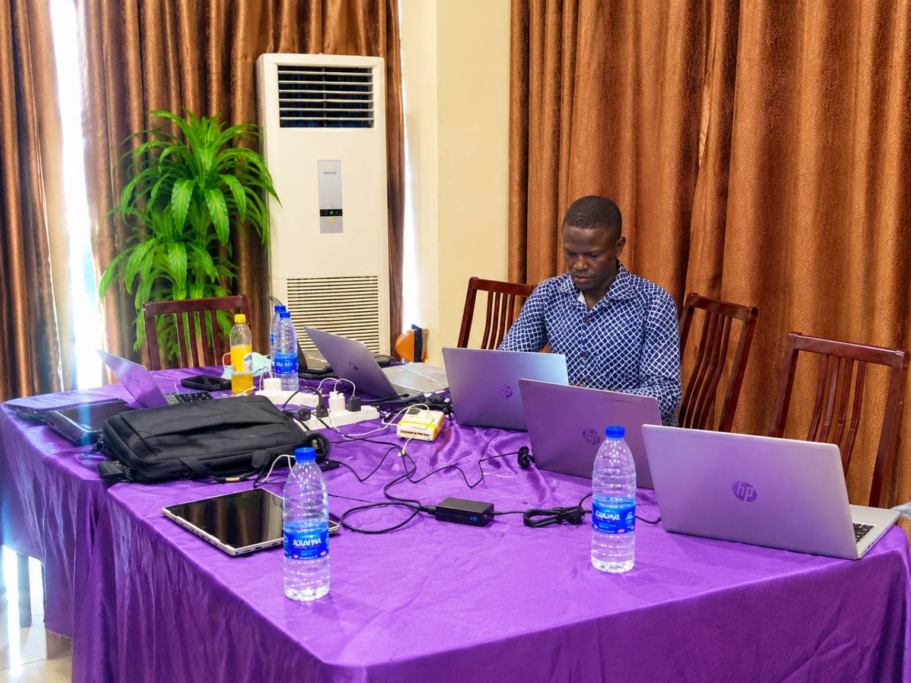
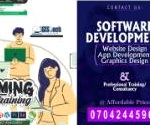
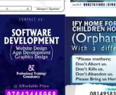
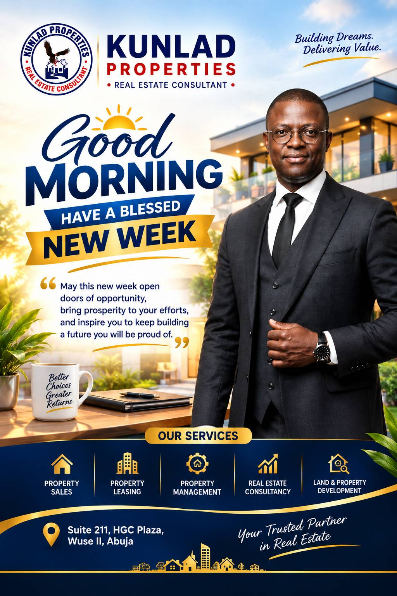
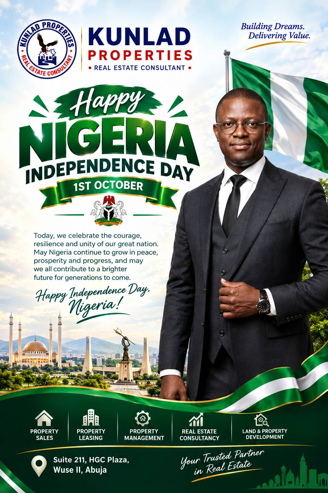
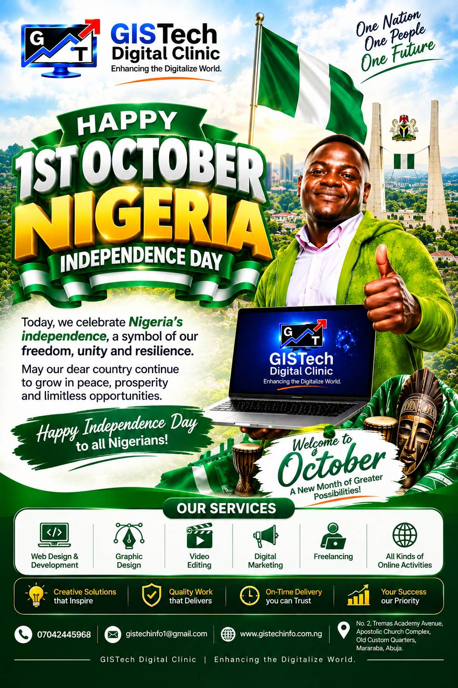
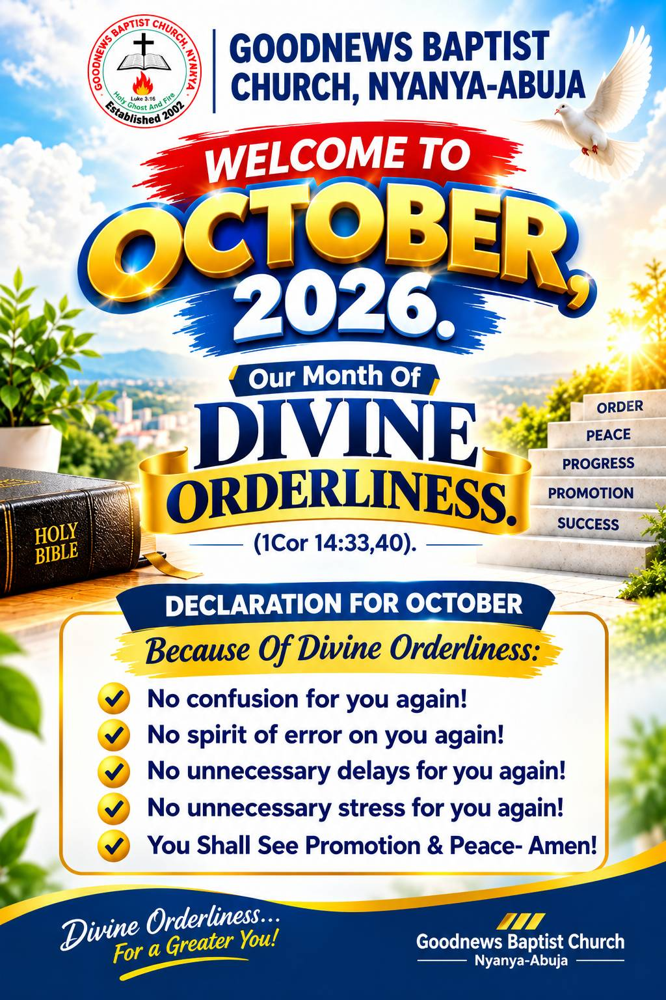
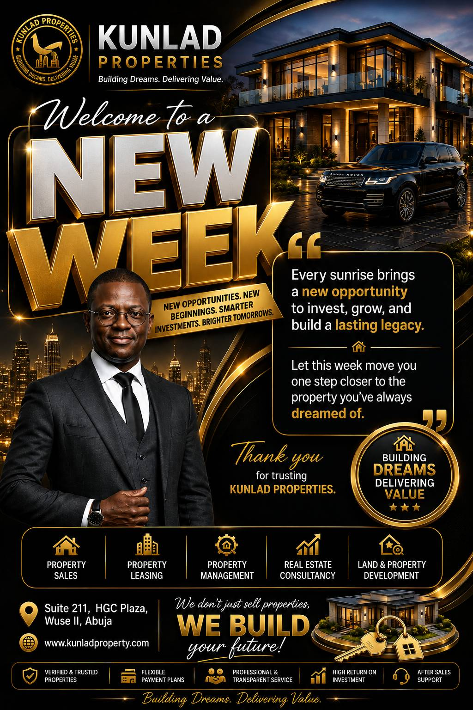

Web & Software Development
Business websites, landing pages, web solutions and programming work.

NEHEMIAH EMMANUELDIGITAL CREATIVE · IT SPECIALISTICT PROFESSIONAL · DIGITAL CREATIVE · FREELANCER
I’m Nehemiah Emmanuel, an Abuja-based digital professional combining IT support, web development, graphic design, video editing and digital communication to help people and organisations move forward.
Explore my work ↗Let's talkNational Diploma · Computer Science | Available for suitable opportunities
ABOUT ME
My professional background spans technology, education, business support and creative services. I have worked as a system administrator, programmer/graphics designer, computer instructor, IT personnel, social media handler and freelance website/IT support provider.
I enjoy solving practical problems, learning new tools and helping teams use technology and communication effectively. I hold a National Diploma in Computer Science, alongside diplomas and certificates in programming, graphics design, data processing and computer maintenance.
WHAT I DO
Business websites, landing pages, web solutions and programming work.
Flyers, promotional graphics, brand materials and visual communication.
Promotional videos, social content and presentation media.
Content support, page management, online promotion and visibility.
Computer support, system administration, maintenance and troubleshooting.
Computer instruction, ICT skills support and practical user guidance.
SELECTED WORK & PROJECT AREAS
Project links are reproduced from the supplied portfolio; please verify third-party websites remain live.
Open project website ↗

WEBSITE / CLIENT WORKOpen project website ↗

WEB / TECHNOLOGYOpen project website ↗
INSTITUTIONALOpen project website ↗
Software concepts and development work. Not represented as completed live products.
Individual approved samples can be added to this gallery.
SELECTED DESIGN SAMPLES
A selection of graphic-design samples supplied for this portfolio, including event flyers, promotional artwork, branding and business materials.





VIDEO SHOWREEL & MEDIA SAMPLES
Add your own images, MP4 videos and website or YouTube links to your saved media library. Saved items can be selected again after refreshing this browser.
CAREER JOURNEY
Health Information Management / Account Staff
Freelance website, IT support, graphics design and branding
IT Admin Staff / Computer Instructor
Freelance Social Media Handler / IT Assistance
Computer Teacher / Academy Secretary; Computer Teacher; Head of Cashier
IT Personnel (Contract)
Programmer / Graphics Designer
Manager
Graphics Designer, System Administrator, Computer Operator/Manager, Computer Teacher and Computer Instructor at God’s Mercy Printing Press, Essues Engineering, Harvard ICT Institute, Emmanuel Children Academy and Nasarawa State UBE Teachers Training Program; Domestic Election Observer (INEC 2019, contract under CCN).
EDUCATION & DEVELOPMENT
Also: WASSCE, Maranatha College (2015–2016); NACOS National Software Summit Hackathon participant, Nile University Abuja (2021); NACOS member.
OPPORTUNITY OR PROJECT?
Open to suitable employment, contract opportunities, freelance projects and collaboration.
Email me ↗WhatsApp+234 704 244 5968 · +234 704 786 3250 · FCT, Abuja, Nigeria